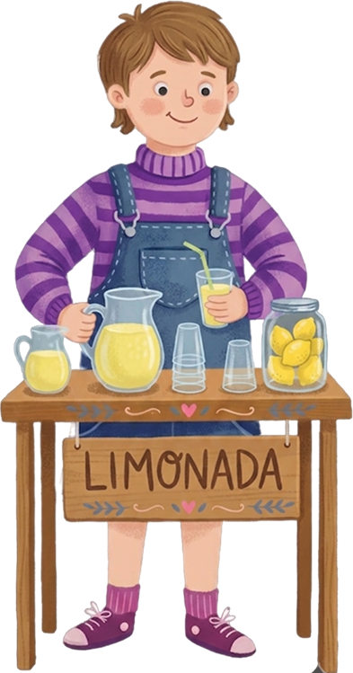
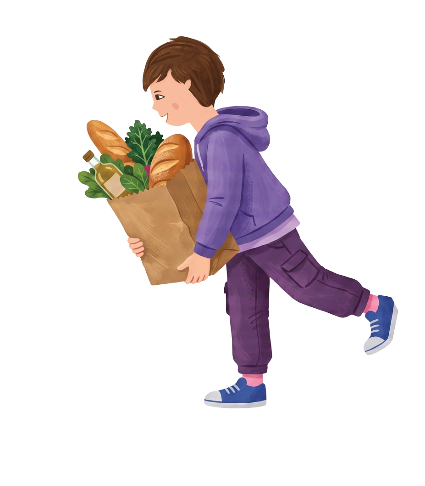

Los creadores
Quiénes hicieron este libro


Candelaria Sosa
Autoría"Desde chica jugaba a ser maestra rural con mis animales y muñecos, o a tener una juguetería con mis hermanos. Armábamos el stock, vendíamos a la familia, cobrábamos con los billetes del estanciero… Era tan divertido. A mí siempre me encantó la sección de librería. Creo en la literatura al servicio de las personas."
Agustín Sosa
Contabilidad"Creo en la cultura administrativa y contable como motor del desarrollo económico y social. Porque antes de comprender el mundo financiero, primero hay que generar ingresos, cobrarlos y sostenerlos en el tiempo. Ese es el verdadero punto de partida."
Victoria Guazzone di Passalacqua
Edición"Trabajar en este libro fue una forma de volver a lo esencial. A esos juegos en los que siempre queríamos ser el que vendía, el que daba el cambio, el que ponía el precio. Estoy convencida de que cuanto antes aprendemos a entender el dinero, más y mejores herramientas tenemos para elegir cómo vivir, crecer y desarrollarnos."
Mariela Rojkin
Ilustración"Este proyecto fue el puente perfecto para conectar con mi hija y su prima, mientras aprendían a colaborar y emprender. Creá tu empresa transforma conceptos administrativos, contables y financieros en herramientas simples y prácticas. Un gran aliado para impulsar su creatividad y su confianza para el día de mañana."
Audrey Ashby
Diseño"Ser parte de este proyecto significó para mí la posibilidad de plasmar herramientas complejas pero necesarias en un soporte cercano y accesible, para que las ideas de los más chicos no se queden solo en imaginar. A la vez, fue reconocer en la curiosidad de los chicos que ya andan inventando cosas ese impulso que alguna vez me llevó a elegir un camino independiente en el mundo laboral."
Agustín Catino
Animación"Siempre me apasionó crear proyectos que ayuden a las personas a crecer. Participar en este libro es una forma de acercar el mundo del emprendimiento a los más chicos, despertando su curiosidad, creatividad y confianza para animarse a construir sus propias ideas."


Por qué lo hicimos
Porque este es el libro que nos hubiera gustado tener de chicos.
Este libro nace al observar que muchos jóvenes llegan a la mayoría de edad sin las herramientas necesarias para dar sus primeros pasos en el mundo del trabajo o para emprender.
Creemos que brindar estas herramientas desde temprana edad permite que más chicos, cuando les toque, puedan emprender con confianza y construir un futuro con mayores oportunidades.


¿Arrancamos el juego del primer negocio?
Seis capítulos, un sinfín de inspiraciones de emprendimientos y un proyecto propio diseñado al terminar de leerlo.
Adquirir el libro